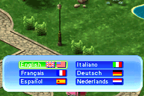

Sims 2, The - Pets (Europe) (En,Fr,De,Es,It,Nl)
Flash 512K Save Format Spec gbakit Built-In 📺 Joybus 💾 MultiBoot 🎮 4P Link
Cartridge Identity
- Game Code
B4OX(FamilyB4O)- Header Title
SIMS2 PETS- Maker / Revision
69/ rev0- ROM Size
- 32.0 MiB (33,554,432 B)
- Save Media
Flash 512K- SHA-256
ff7ba5c9a372373cf2c223fb87b00ddb8d1f3914a077c96076db1f594e4c0d9f- Engine / SDK Group
comm-015(23 families)
Screenshots


Link Cable & Multiplayer Communications
This title contains detected communication capabilities: 📺 Joybus 💾 MultiBoot 🎮 4P Link.
Detailed protocol specifications, SIO registers, Joybus commands, and MultiBoot sequences are documented in the Link & Multiplayer Reference.
- Multi-Player SIO (4P)
- 16-bit ring network · SIOCNT (
0x04000128) literals:0x056ba4,0x056cd4,0x05bb08· SIODATA32/SIOMULTI0 (0x04000120) literals:0x05bc24,0x05bc88,0x05bcf4 - GameCube Joybus
- Register literal
REG_JOYCNT(0x04000140) at offset0x056190 - GameCube Joybus
- Register literal
REG_JOY_RECV(0x04000150) at offset0x056158 - GameCube Joybus
- Register literal
REG_JOY_RECV(0x04000150) at offset0x842cf0 - Single-Cart MultiBoot
- Single-Cartridge MultiBoot (Download Play) client/server handler · Thumb SWI 0x25 (
0xDF25):0x06dc6e,0x6f2f7a,0x857b84,0xa4d2e0
Battery Save Format Specification
Open Full Save Format SpecDownload Sample .sav (65,536 B)Download save-format.json
- Specification Coverage
- 20 mapped fields · 2 verified checksum(s) · Confidence: MEDIUM
- gbakit Built-In Support
- Built-in (B4OX)
- Emulator Verification
- Checksum enforced: Yes · Repaired save accepted: Yes · Visual delta on edit: Yes
gbakit save verify B4OX save.sav
gbakit save decode B4OX save.sav
gbakit save fix B4OX damaged.sav -o repaired.savObserved Battery Save Layout
- Fill Byte & Active Size
0xFFfill · 15,750–15,750 / 65,536 B active (entropy 0.06 bits/B)- Active Offset Ranges
0x0–0x10,0x13–0xF66,0xF68–0xF6A,0xF6C–0xF6E,0xF70–0xF72,0xF74–0x1EC6,0x1EC8–0x1ECA,0x1ECC–0x1ECE, +8 more (18 total)- ASCII Magic / Headers
A2M7,WAFFY- Observed Variable Regions
- 3 bytes across 2 spans:
0x0–0x1,0x13 - Candidate Checksum/Counter Spans
0x0–0x1,0x13- Integrity Check
- Confirmed at
0x0
Text, Fonts & Scene Data
- Primary Text Encoding
- Compressed / custom-encoded text (
16ASCII strings ·2Shift-JIS runs) - Font & VWF Indicators
- VWF Width Table 1bpp Font · BIOS SWIs: BitUnPack
0x10:2· LZ770x11/12:0· Huffman0x13:1· RLE0x14/15:0 - Scene & Packaging
108ROM pointer tables (≥32 entries,4≥200) ·537relativeu32TOCs ·237OAM metasprite hits · FourCC:GAX2PACK
Hardware MMIO Subsystems
ppu_display0x80699dcsave_bus_sram_flash0x806dcb0,0x806df04,0x806dfd0,0x806e068,0x806e31c
Regional Variants & Revisions (Family B4O)
- Sims 2, The - Pets (USA, Brazil) (En) (
B4OE, 32 MiB)